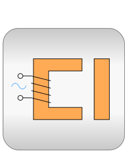

.
Modelica
.
Magnetic
.
QuasiStatic
Information
This package contains quasi-static magnetic libraries
Contents
Name
Description

FluxTubes
Library for modelling of quasi-static electromagnetic devices with lumped magnetic networks
FundamentalWave
Quasi-static fundamental wave electric machines
Generated at 2020-06-05T21:39:08Z by
OpenModelica 1.16.0~dev-442-g2e5bc9f